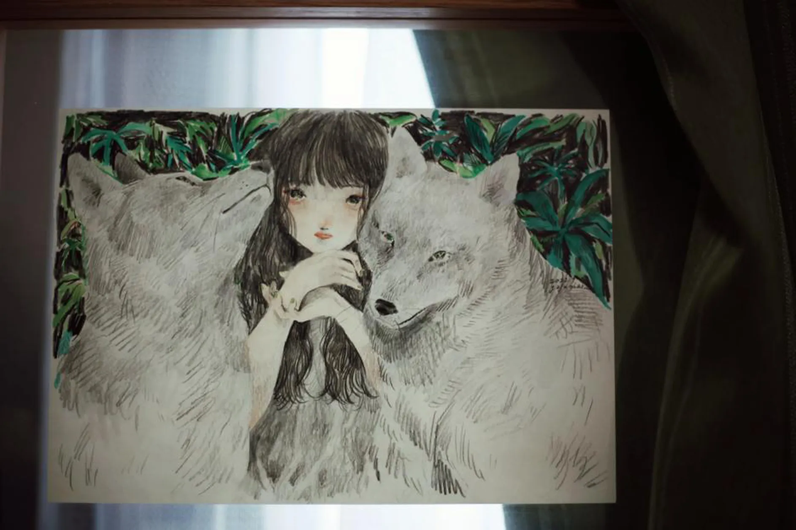

がじゅまる
やわらかい絵柄や、
キャプションやコメントの文章が好きで、
インスタで作品をみたり、
日常的にLINEスタンプを使ったりしていました。
そんな憧れのがじゅまるさんの作品を
「この目で実際にみてみたい！」という気持ちで、
2022年、人生初のデザインフェスタへ。
ライブペイントで大きな絵を描くがじゅまるさん、
今思い出してもかっこよかったな。
数ある原画の中から選んだこの作品は
女の子と二匹の世界、
その内側にある「愛おしさ」や「親密さ」と、
それに反して
外側に向けられる「威圧」や「拒絶」を感じる、
空気感が好きで、とても気に入っています。
がじゅまるさんの描く
人物×動物のシリーズ、ほんとかわよい。
エッセイや日記を書かれることもあるのですが、
がじゅまるさんの文章を読むと、
日常って、自分って、結構面白いよなあと、
「自分の不出来さゆえの面白さに気づく」感覚になれます。
周りみたいにうまくできなくて、
やっぱり生きるの下手だなあと落ち込んだりするけど、
自分なりの（独特な）やり方で、
「生きるの上手じゃん！」と思える瞬間があったりする。
子供のころに比べて
色んな事が自分の意志とは無関係に絡みついてきたりとか、
「普通」に大人をやるのは大変だけど、
でも、大人だからできることとか、
許されてる自由さとかも思いがけずあったりして、
結構楽しかったりするよね。
日々の生活のなかで、
ひとりで何度も考え直し、分析する、
その過程を開示してくれるありがたさ。
そうやって生きている人が居ること、
その存在自体が、自分も「がんばるかぁ」と思える、
生きるうえでの小さな燃料になっています。
「お散歩マスター」であるじゅまるさんに
良いお散歩情報が共有できるよう、
本日もはりきって散歩へ向かおうと思います。
お散歩マスターに、俺もなる！
